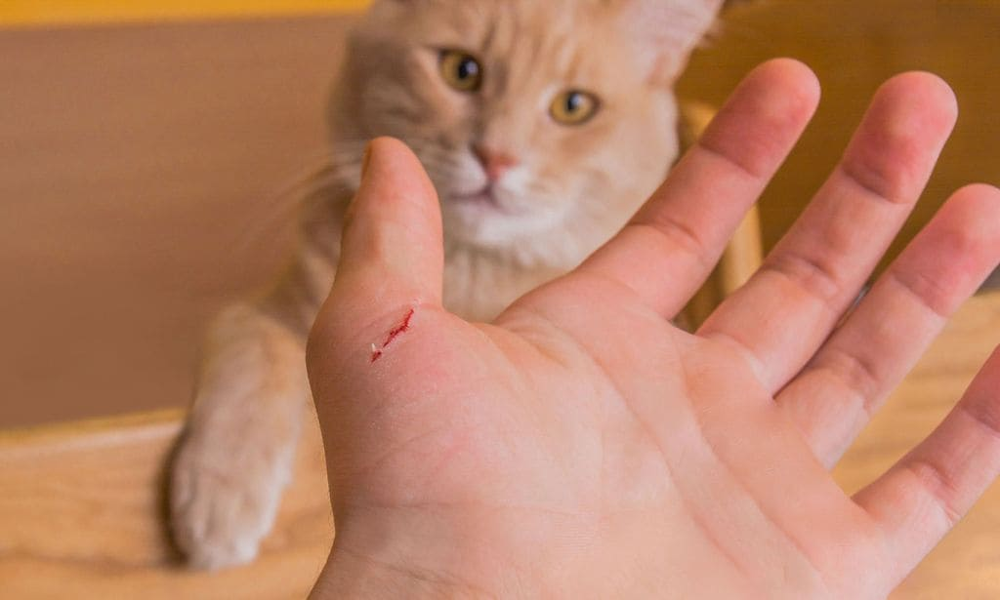
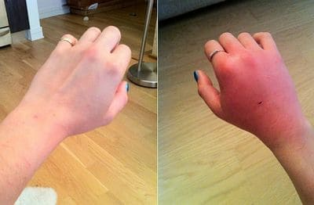
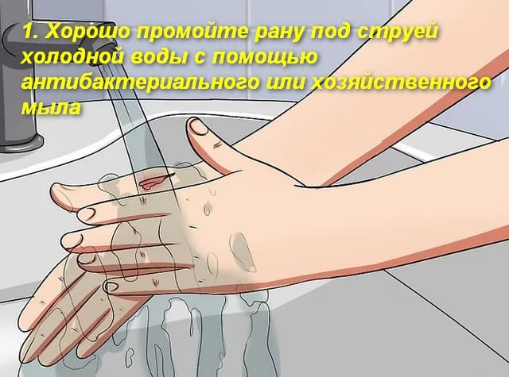
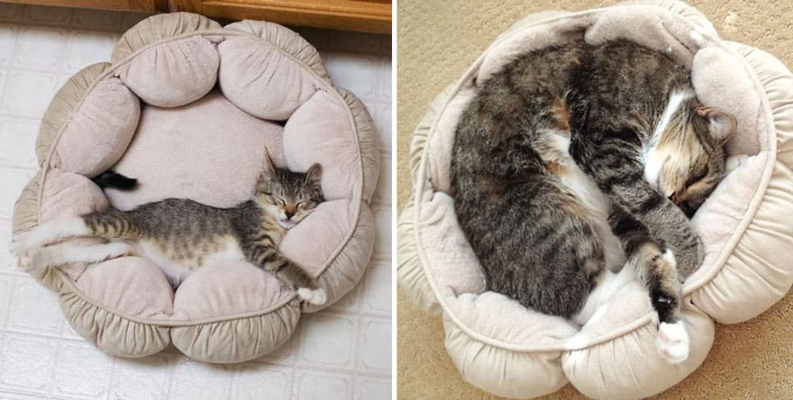
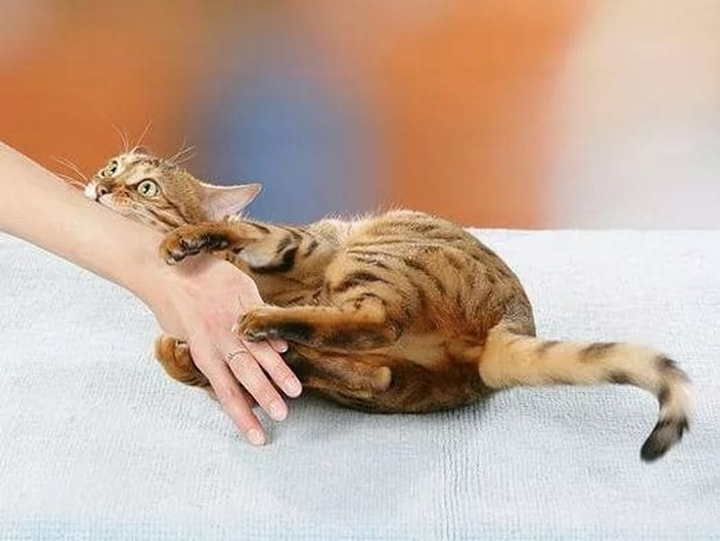
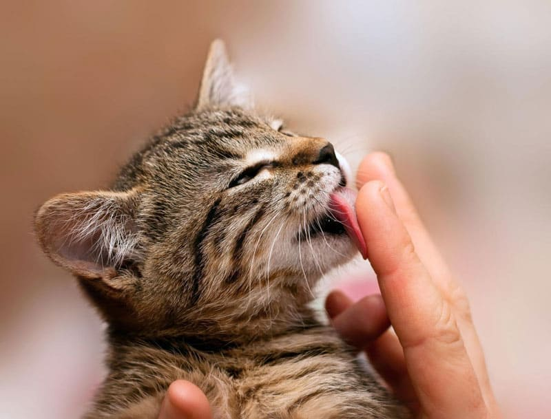
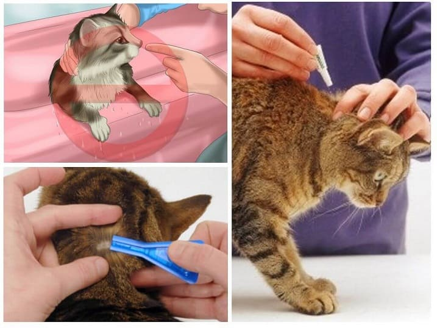
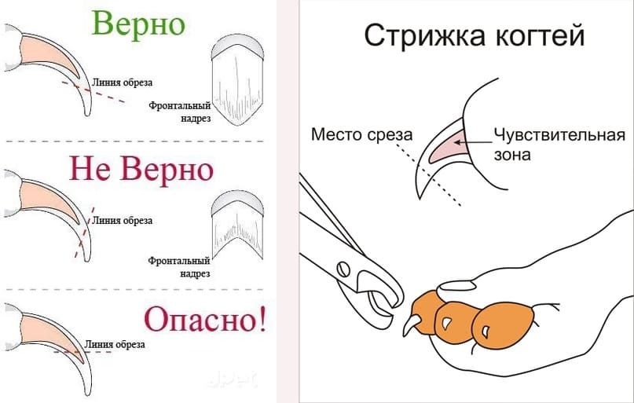

Из всех доброкачественных причин увеличения лимфоузлов следует выделить отдельно болезнь кошачьих царапин. Она проявляется бессимптомным увеличением лимфоузлов в подмышечной впадине (реже – в других местах) и возникает спустя 1–3 месяца после контакта с кошкой (особенно котенком первого года жизни). Не волнуйтесь, это не опасно.
БОЛЕЗНЬ КОШАЧЬИХ ЦАРАПИН (БКЦ),
она же доброкачественный лимфоретикуллез, она же фелиноз – это бактериальная инфекция, распространителем которой чуть реже, чем всегда, являются кошки.
Обычно заболевание передается, когда инфицированный кот (чаще котенок) лижет открытую рану человека, или кусает, или царапает человека достаточно сильно, чтобы повредить все слои кожи (до просачивания крови).

БКЦ проявляется лихорадкой, головной болью, плохим аппетитом и потерей веса. Позднее (спустя еще 1–4 недели) возникает увеличение лимфатических узлов, наиболее близких к месту внедрения инфекции (к первоначальной царапине или укусу); помимо увеличения, могут появиться отек вокруг лимфоузлов, локальная боль, покраснение кожи над ними.

Через 3-14 дней в месте царапины может возникнуть местная легкая сыпь (этот этап бывает не у всех больных). Зараженная область может припухнуть, и на ней могут появиться красные, округлые, приподнятые элементы сыпи, иногда в центре их небольшая пустула (пузырек с гноем). Это место может стать горячим и/или болезненным.
Сами кошки заражаются B. henselae через укусы блох и загрязненные раны в коже; часто кошка заражается во время драки с другой, больной кошкой. Бактерия не проникает через неповрежденную кожу человека, поэтому для заражения людей обязательным условием является наличие глубокой раны (ослюнение) или нанесение раны сквозь все слои кожи самой кошкой (зубами или когтями).
БКЦ вызывается особой бактерией Bartonella henselae. Около 40 % кошек являются носителями В. henselae как минимум некоторое время своей жизни, хотя большинство кошек с этой инфекцией сами не имеют никаких признаков заболевания. Чаще всего носителями этой инфекции, а значит, и источником для людей, являются котята в возрасте до одного года. Кроме того, котята гораздо чаще царапают и кусают своих хозяев, так как это элементы игры и тренировки будущей охоты на добычу.
Обычно БКЦ является абсолютно безопасным и самопроходящим заболеванием, не требующим никакого лечения кроме симптоматического (антигистаминные при зуде, жаропонижающие при лихорадке или боли). В тяжелых случаях назначают антибиотик азитромицин. Болезнь иногда длится до нескольких месяцев, но мало нарушает самочувствие человека, и от врача обычно требуется только исключить другие причины увеличения лимфоузлов и успокоить пациента. Со временем (за 1–6 месяцев) все изменения (и сыпь, и увеличение лимфоузлов, и недомогание) бесследно и самопроизвольно уходят, но иногда бывают рецидивы болезни (при них может потребоваться вмешательство хирурга).
ПРОФИЛАКТИКА
1) если вас глубоко оцарапала кошка, укусила или облизала рану, незамедлительно вымойте эти места с мылом и проточной водой. Мойте руки с мылом всегда после игры с кошкой, особенно если вы живете в доме с маленькими детьми или людьми с ослабленной иммунной системой;

2) поскольку у кошек в возрасте до года больше шансов получить БКЦ и заражать людей, людям с ослабленной иммунной системой следует заводить себе только взрослых кошек (старше года);

3) избегайте грубых игр с кошками, при которых легко получить царапины и укусы от животного;

4) не позволяйте кошкам лизать ваши открытые раны;

5) своевременно истребляйте блох у вашей кошки;

7) своевременно подстригайте когти у кошки.

(Сергей Бутрий "Здоровье ребенка: современный подход")